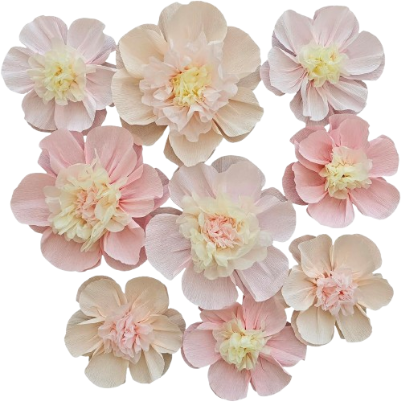
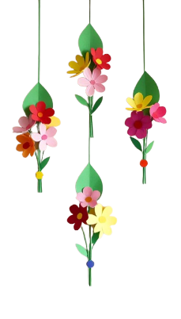
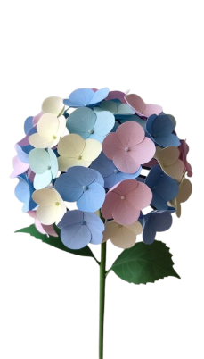

Deja volar tu creatividad
Combina colores, formas y tamaños. Puedes darle tu propio estilo a cada flor que realices.
¿Alguna vez has querido hacer flores de papel, pero no sabes por dónde empezar? ¡Este pequeño espacio es para ti!
Aquí descubrirás que con unas cuantas hojas, un poco de paciencia y creatividad puedes hacer flores bonitas para decorar, regalar o simplemente pasar un rato entretenido.


Lo bonito de las manualidades con papel es que no necesitas tener mucha experiencia para comenzar. Algo tan sencillo como doblar, recortar o pegar una hoja puede convertirse en una flor llena de detalles.
Además, es una actividad que puedes hacer a tu propio ritmo. Puedes dedicarle unos minutos de tu día, experimentar con diferentes colores y descubrir nuevas formas de crear.
Y aunque al principio los dobleces no salgan exactamente como esperabas, ¡no pasa nada! Cada intento es parte del aprendizaje.
A veces solo necesitamos encontrar una actividad diferente para distraernos un rato y dejar que nuestra imaginación haga lo suyo.
Combina colores, formas y tamaños. Puedes darle tu propio estilo a cada flor que realices.
Es una buena oportunidad para desconectarte un momento de la rutina y concentrarte en crear algo.
Las flores de papel pueden convertirse en decoraciones, pequeños regalos o recuerdos hechos por ti.
No necesitas hacer una flor perfecta en tu primer intento. Puedes comenzar con diseños sencillos y poco a poco animarte a probar otros más elaborados.
Lo importante es que disfrutes lo que haces. Tal vez hoy comiences con una sola flor y mañana termines creando todo un ramo. ¡Anímate a descubrir lo que puedes hacer con un poquito de papel!
